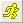
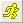

最終更新: 2018/07/20
結果シートやグラフウィンドウ上の鍵マークの色によって判断できます。
データが変更されると、このマークが黄色に変わり、再計算が必要であることを知らせます。鍵を左クリックして再計算またはパラメータを変更できます。
更新が必要な場合、標準ツールバーの再計算ボタン  が、再計算が必要であることを示します。それは黄色  に変わります。このボタンをクリックすると、更新が必要なプロジェクトの結果がすべて更新されます。ボタンの上にマウスを置くと、必要な更新の数を示すメッセージが表示されます。
が、再計算が必要であることを示します。それは黄色  に変わります。このボタンをクリックすると、更新が必要なプロジェクトの結果がすべて更新されます。ボタンの上にマウスを置くと、必要な更新の数を示すメッセージが表示されます。
キーワード: 錠, シンボル, 赤, 自動, 更新, 黄色